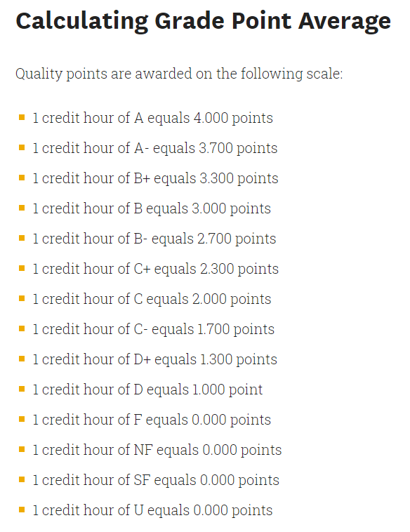
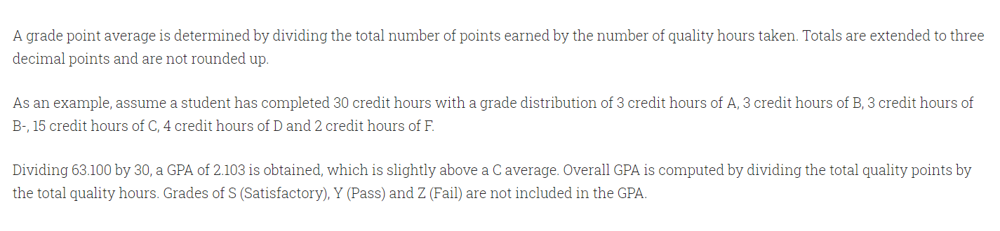
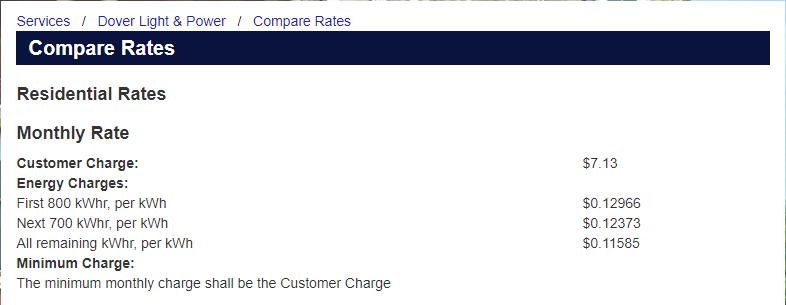
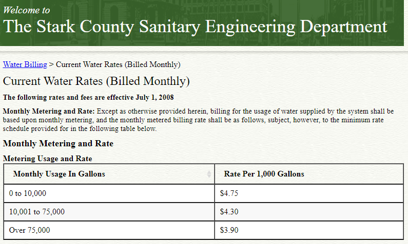
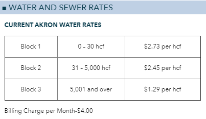
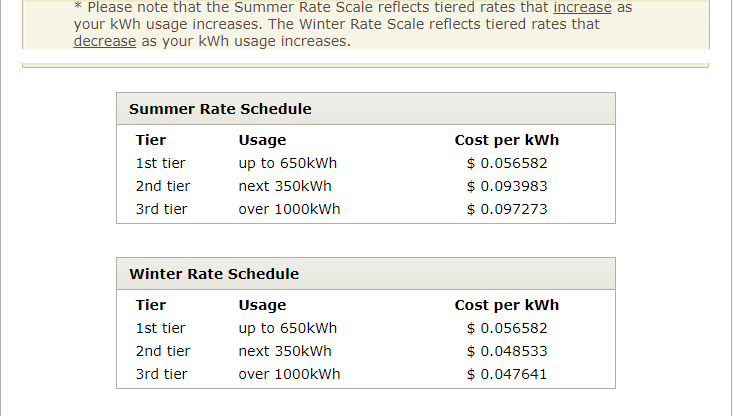
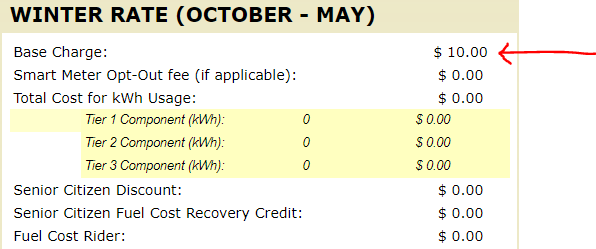
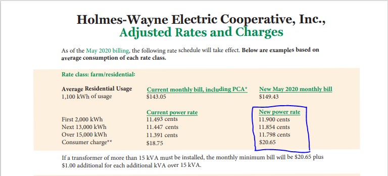
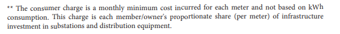
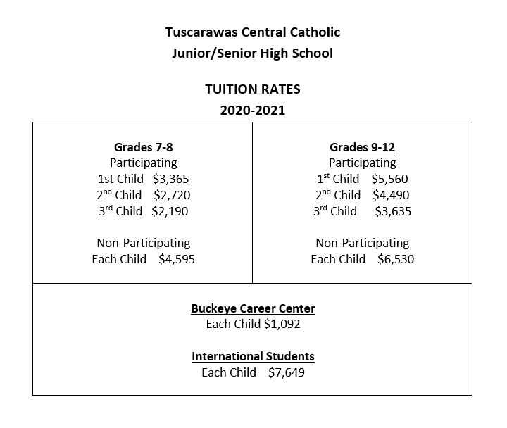

Students will:
(1.)
Information in English: Plain Information
Basic Service: $10.00
Tier Usage Cost per KWh
1st tier up to 650KWh $0.056582
2nd tier next 350KWh $0.093983
3rd tier over 1000KWh $0.097273
Information in Mathematics: Piecewise Function
$
c(p) =
\begin{cases}
0.056582p + 10; & \quad 0 \leq p \leq 650 \\[3ex]
0.093983p - 14.31065; & \quad 650 \lt p \leq 1000 \\[3ex]
0.097273p - 17.60065; & \quad p \gt 1000
\end{cases}
$
Please test the calculator and see the output.
Complete all fields. Then, click "Bill Statement".
Information in Mathematics: Piecewise Function
$
c(p) =
\begin{cases}
0.056582p + 10; & \quad 0 \leq p \leq 650 \\[3ex]
0.048533p + 15.23185; & \quad 650 \lt p \leq 1000 \\[3ex]
0.047641p + 16.12385; & \quad p \gt 1000
\end{cases}
$
Please test the calculator and see the output.
Complete all fields. Then, click "Bill Statement".
May you please review these requirements?
These are the minimum requirements. Please be creative.
(1.) Please use appropriate name for your project application.
The application should display at least the same output of my calculator.
That implies that you should test my calculator to see the output.
Your application may include more information.
(2.) The application should be a desktop application.
(3.) Set the MinimumBox property of the form to True
We want to accommodate users with laptop/desktop smaller screen sizes too.
They should have the ability to adjust your application to fit their screen sizes.
(4.) The Input/Output feature should be used.
Error Handling
(5.) Alert the user/Display an appropriate error message to the user, if the Final Reading is less than
the Initial Reading.
(6.) Alert the user/Display an appropriate error message to the user, if the Initial Reading is
negative.
(7.) Alert the user/Display appropriate error message to the user, if the Final Reading is negative.
(8.) Alert the user/Display appropriate error message to the user, if the Tax is negative.
(9.) Use only tax in percent. Do not worry about tax in decimal.
(10.) Make sure your executable file runs by itself outside the project folder
If it does run, include all these: (documentation of all your Math work and the
.exe file)
in OneDrive, create a shareable link, and post the link in the Midterm Project Drafts forum of the
course on Blackboard or send to me via email.
You may also upload them directly if you prefer.
I shall review and provide feedback.
If your submission works well, I shall ask you to submit the Project folder.
The Project folder is the folder that is created when you create a new project.
When you submit it, I shall review and provide feedback.
If it does not run, then you need to fix it.
If you cannot fix it and you have reviewed the resources, please attend the Office Hours/Live Sessions
so I can help you.
When you are done (everything works well), please zip
the entire project: (documentation of the Math, executable file that runs by itself outside the Project
folder, and
the Project folder) into one folder; and submit the zipped folder (.zip only) in the actual Midterm
Project forum of the
Blackboard course.
May you please review these requirements?
These are the minimum requirements. Please be creative.
(1.) Please use appropriate name for your project application.
The application should display at least the same output of my calculator.
That implies that you should test my calculator to see the output.
Your application may include more information on the output.
(2.) The application should be a desktop application.
(3.) Set the MinimumBox property of the form to True
We want to accommodate users with laptop/desktop smaller screen sizes too.
They should have the ability to adjust your application to fit their screen sizes.
(4.) Input/Output feature should be used.
(5.) Class should be used.
(6.) Constructor(s) should be used.
(7.) Property/Properties should be used.
The class members: Initial Reading and the Final Reading should be private.
(8.) Method(s) should be used.
Error Handling
(9.) Alert the user/Display an appropriate error message to the user, if the Final Reading is less than
the
Initial Reading.
(10.) Alert the user/Display an appropriate error message to the user, if the Initial Reading is
negative.
(11.) Alert the user/Display appropriate error message to the user, if the Final Reading is negative.
(12.) Alert the user/Display appropriate error message to the user, if the Tax is negative.
For the requirements for Numbers (9.), (10.), and (11.)
Because the power consumption values are only nonnegative integers:
Alternatively; you may use the
NumericUpDown Control
(www.docs.microsoft.com/en-us/dotnet/desktop/winforms/controls/numericupdown-control-windows-forms?view=netframeworkdesktop-4.8)
The control will ensure that the user enters only nonnegative values (zero and positive values).
(13.) Use only tax in percent. Do not worry about tax in decimal.
(14.) Make sure your executable file runs by itself outside the project folder
If it does run, include all these: (documentation of all your Math work and the
.exe file)
in OneDrive, create a shareable link, and post the link in the Midterm Project Drafts forum of the
course on Blackboard or send to me via email.
You may also upload them directly if you prefer.
I shall review and provide feedback.
If your submission works well, I shall ask you to submit the Project folder.
The Project folder is the folder that is created when you create a new project.
When you submit it, I shall review and provide feedback.
If it does not run, then you need to fix it.
If you cannot fix it and you have reviewed the resources, please attend the Office Hours/Live Sessions
so I can
help you.
When you are done (everything works well), please zip
the entire project: (documentation of the Math, executable file that runs by itself outside the Project
folder,
and
the Project folder) into one folder; and submit the zipped folder (.zip only) in the actual Midterm
Project
forum of the
Blackboard course.
These are some of the nice projects done by my students.
Some of them are Midterm Projects while some are Final Projects.
Because of FERPA (Federal Educational Rights and Privacy Act) laws, only the first names of my students
are written.
No worries, these files are safe to run. 😊
(1.) GPA
Calculator for Kent State University
by Connor
As at today: 05/06/2021, the verifiable website for this application is:
GRADE POINT
AVERAGE (GPA) | Kent State University
(http://catalog.kent.edu/academic-policies/grade-point-average/)










(1.)
Visual Basic Tutorials by Microsoft (Free)
Visual Basic
Documentation
Visual
Basic Developer Community
LinkedIn Learning (Kent State University)
O'Reilly Online
Learning
For Kent State University students, Select your Institution > Choose “Not Listed?
Click here.”
Enter your Kent State University email address and click Let’s Go
Visual Basic Notes for Professionals: Stack Overflow Documentation (Free)
Wikibooks: Visual Basic (Free)
Stack Overflow: Question and Answer Forum for
Computer Science
Lynda.com/LinkedIn Learning (Start for Free. Then, not
free)
Chukwuemeka, S.D (2024, April 30). Samuel Chukwuemeka Tutorials: Math, Science, and Technology.
Retrieved from https://scholarlycommunication.github.io/Presentations/
Free Visual Basic .NET Book. (n.d.). Books.Goalkicker.com. Retrieved January 16, 2021, from
https://books.goalkicker.com/VisualBasic_NETBook/
KathleenDollard. (2018, March 28). Visual Basic. Microsoft.com.
https://docs.microsoft.com/en-us/dotnet/visual-basic/
Zak, D. (2016). Programming with Microsoft Visual Basic 2015. Cengage Learning.